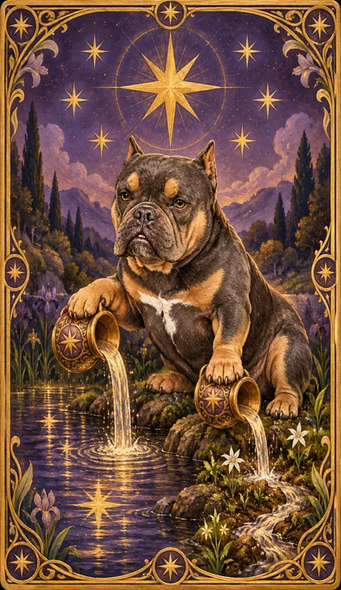

FOLLOW YOUR INTUITION
有些答案，正在靠近。
慢慢呼吸，選擇三張讓你停留的牌。
左右滑動牌列，尋找你的三張牌。
牌位依抽取順序排列；每張牌只會出現一次。
讓卡卡陪你，看見下一步。
點選一個主題，再選最貼近你的提問。
22 張大阿爾克那 · 此刻狀態 / 需要看見 / 下一步

牌是一面鏡子。
你，才是故事的主角。
慢慢呼吸，選擇三張讓你停留的牌。
左右滑動牌列，尋找你的三張牌。
牌位依抽取順序排列；每張牌只會出現一次。
認識卡卡的 22 張大阿爾克那。
九個主題依常見的感情、工作、自我、健康、未來、金錢、人際、家庭與抉擇提問整理。不是全球熱門程度排名；選最貼近你此刻的事，就好。
選題參考：2026 平台樣本與限制 · 2026 提問文章
回看當時的牌，也看看現在的自己。
紀錄只保存在目前的瀏覽器，最多 50 筆。